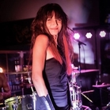

PRESENTATIONS DES MUSICIENS
LIETHA NA : Chant. Egalement chanteuse du groupe Marseillais JAILBREAKERS, du groupe de filles 1000 REASONS, à participé au ROCKIN'1000 et chanté au STADE DE FRANCE devant 50.000 spectateurs. Ne vous fiez pas à sa douche apparence, son coffre et sa puissance en ont bluffé plus d'un.
KA RYNH : Guitare ryhtmique. Egalement guitariste du groupe féminin 1000 REASONS, et a rencontré LIETHA NA lors d'une répétition pour le ROCKIN'1000 au STADE DE FRANCE.